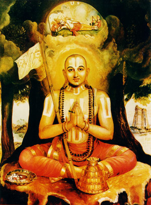

1) Within 16 years of age, he had mastered all the Vedas and Sastras. At age 17, he married Rakshakaambaal (Tanjammal, in Tamil).
2) Ilaya Perumal was placed under the Advaitic Sannyasi called YADAVA PRAKASA at Tirupput kuzhi for training in Advaita Purva Paksha Sastra of Vedanta. Once during this period, Alavandar who desired nominating Ilaya Perumal to succeed himself visited Tirupput kuzhi, met with him but had no opportunity to speak to him and had to return to Srirangam.
Very many occasions arose when the Saivite Guru clashed with Ilaya Perumal when the Guru misinterpreted Vedantic statements. Ilaya Perumal fearlessly pointed out the errors in the Guru's interpretations and corrected him. This enraged the Guru. Fearing that one day, Ilaya Perumal would demolish Advaita philosophy, he plotted to kill Ilaya Perumal by drowning him in Ganga while on a pilgrimage tour of the country with his disciples.
Learning of the design through one Govinda, another disciple who was also related to him, Ilaya Perumal slipped out into the forest at dead of night. Miraculously, an aged hunter couple appeared and guided him. As Ilaya Perumal who was in a trance, opened his eyes, he found himself at the outskirts of Kanchipuram and the couple had disappeared. He realized that it was Lord Varadaraja and Perundevi Thayar who had come in the guise of the hunter couple. He stayed at Kanchi for a while to assist Tiruk Kachi Nambi in his daily chores of service to Lord Varadaraja.
3) News came that Alavandar was very sick and he desired to meet with Ilaya Perumal. Just as Tirukkachi Nambi and Alavandar arrived, they saw the funeral procession of Alavandar. During the last rites, they noticed that three fingers of Alavandar remained folded signifying three of his last unfulfilled wishes. As Ilaya Perumal swore,
i ) that he would write a commentary on Veda Vyasa's Brahma Sutra,
ii ) that he would perpetuate the memory of Vyasa and Parasara and
iii ) that he would strive to propagate Visishtadvaita on the lines of the 4000 holy
collects of Alwars.
The fingers unfolded one by one automatically and stretched out to normal position
signifying that these were his last wishes. Since he could not meet with Alavandar, he
returned to Kanchi without even going into the temple at Srirangam.
4) Tirukkachi Nambi obtained from Lord Varadaraja the famous ' Six Words ' and passed them on to Ilayalwar. The six words provided the guidelines for Ilayalwar to follow. They were:
i ) that Lord Narayana is the Paramatma,
ii ) that the individual souls (atma) were different from Paramatma,
iii) that Prapatti is the means to attain salvation,
iv) that the last remembrance of the Lord on the part of the departing soul was not
necessary,
v) that Moksha can be obtained only on laying off the mortal coils (Videha Mukti) and
vi) that Ilaya Perumal should take refuge at the feet of Periya Nambi.
Accordingly, he met with Periya Nambi at Madurantakam, where under the shade of Vakula tree Periya Nambi performed Pancha Samskara to him. As he was initiated into the esoteric of Dvaya Mantra at Madurantakam, the place came to be known as "Dvayam Vilaindha Tiruppathi" (PPM) Both returned to Srirangam and did Kalakshepams on Brahma Sutra etc. for sometime. It was at this time that Lord Ranganatha called him "Nammudaiyavar" (He is ours).
Read more about Ramanujas life on saranagathi.org